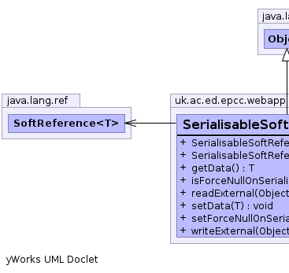
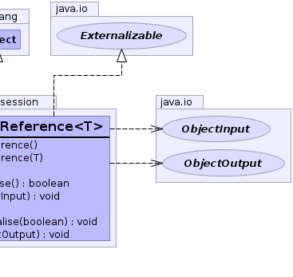

T - Type referenced this should be a primitive type or Serializablepublic class SerialisableSoftReference<T>
extends java.lang.Object
implements java.io.Externalizable
|  |  |
| Constructor and Description |
|---|
SerialisableSoftReference() |
SerialisableSoftReference(T data) |
| Modifier and Type | Method and Description |
|---|---|
T |
getData() |
boolean |
isForceNullOnSerialise() |
void |
readExternal(java.io.ObjectInput in) |
void |
setData(T data) |
void |
setForceNullOnSerialise(boolean force_null_on_serialise) |
void |
writeExternal(java.io.ObjectOutput out) |
public SerialisableSoftReference()
public SerialisableSoftReference(T data)
public boolean isForceNullOnSerialise()
public void setForceNullOnSerialise(boolean force_null_on_serialise)
force_null_on_serialise - the force_null_on_serialise to setpublic void setData(T data)
public T getData()
public void writeExternal(java.io.ObjectOutput out)
throws java.io.IOException
writeExternal in interface java.io.Externalizablejava.io.IOExceptionpublic void readExternal(java.io.ObjectInput in)
throws java.io.IOException,
java.lang.ClassNotFoundException
readExternal in interface java.io.Externalizablejava.io.IOExceptionjava.lang.ClassNotFoundException